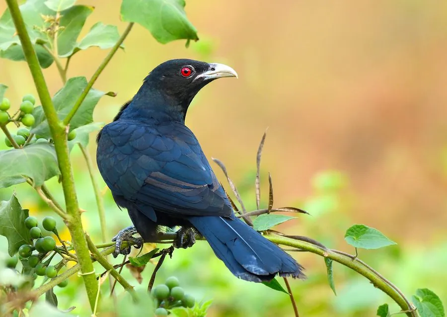

鸟类 · 动物界
噪鹃 Eudynamys scolopaceus

雄鸟通体乌黑、叫声高亢的杜鹃科鸟类，雌鸟满布斑点，也把蛋寄生在乌鸦等鸟巢中，是中国南方常见鸟。
- 分类
- 门脊索动物门纲鸟纲目鹃形目科杜鹃科属噪鹃属
- 栖息环境
- 森林、果园、城市绿地和村庄，以果实为主食
- 地理分布
- 南亚、东南亚和中国南方，云南、广西、广东、海南、福建和台湾等地有分布
- 保护级别
- IUCN 无危（LC）；中国“三有”保护动物
物种志
噪鹃体长 39–46 cm，体重约 190–330 g。雄鸟通体乌黑，带蓝绿色光泽，喙淡绿灰色，眼睛红色，尾羽长；雌鸟背部褐色并密布白色斑点，腹部白色带黑色横斑，外形与雄鸟差别很大。它的翅膀尖长，飞行时姿态像鹰。
噪鹃分布于南亚、东南亚和中国南方，中国云南、广西、广东、海南、福建、台湾等地都有分布，多为夏候鸟。它们栖息在森林、果园、城市绿地和村庄，以果实为主食，尤其喜欢吃榕树果和无花果，也吃昆虫。噪鹃也是巢寄生鸟类，雌鸟把蛋产在乌鸦、八哥等鸟类的巢中，由义亲抚养。繁殖期雄鸟叫声高亢，从早到晚反复鸣叫，因此得名“噪鹃”。由于适应力强，目前被列为无危物种，中国将其列入“三有”保护名录。
形态与习性
- 食性果实为主，尤其喜食榕树果，也吃昆虫
- 体长39–46 cm
- 体重约 190–330 g
- 繁殖巢寄生，把蛋产在乌鸦、八哥等鸟巢中
- 寿命野外约 10 年
- 鸣叫从早到晚反复高亢鸣叫
- 羽色雄鸟乌黑，雌鸟褐色带白斑，差别极大
趣味知识
- 噪鹃雄鸟通体乌黑，雌鸟则密布斑点和横斑，差别极大。
- 它的叫声高亢刺耳，从早到晚反复鸣叫，因此得名。
- 噪鹃也是巢寄生鸟类，常把蛋产在乌鸦的巢里。
- 它们特别喜欢吃榕树果，是热带果树的种子传播者。